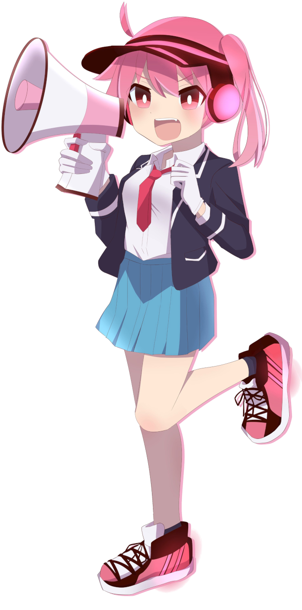
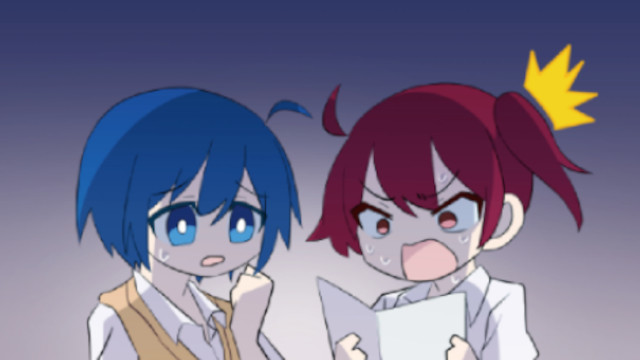
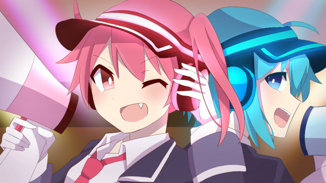

ON AIR
毎週金曜日深夜1時35分
※放送時間は予告なく変更になる場合がございます。
INTRODUCTION
好奇心旺盛で、いつも明るく元気いっぱいなヒメルと、引っ込み思案だが思いやりがあり芯の強いコトハ。二学期が始まり、風紀委員としての活動にも慣れてきた二人は、一学期と夏休みの活動を経て絆が深まり、装備がグレードアップ！「カクセイ機」を使って『想いを伝える』だけでなく、進化した装備を使うことで相手の声を聴いて『想いを理解する』ことができるようになった。

自分の想いをヒメルに伝え、勇気を出して一人で行動したり、大勢の前でパフォーマンスをしたり、活動を通して成長するコトハ。そんなコトハを見たヒメルは、自身も変わりたいと考えている様子。文化祭で手に入れた装備は、ヒメルにどのような変化をもたらすのだろうか？そして、二人の関係はどのように変わっていくのだろうか？今後も二人の活動に注目だ！

CHARACTER
ヒメル
面倒見が良く、正義感が強い。楽しいことが大好きで、突っ走りやすい。チャームポイントは八重歯。
コトハ

穏やかで優しく、責任感がある。ヒメルと過ごすうちに考え方が変わり、前よりも明るくなった。
STORY
#05 「せいせき！」
これまでの活動が認められ、正式に風紀委員となったヒメルとコトハ。より一層活動に力を入れようとしたヒメルであったが、期末試験の結果が悪く追試を受けることになってしまう。委員会に所属し続けるためには、学園に潜む"敵"を倒して討伐点を維持し続ける必要があり、なかなか勉強に集中できないヒメル。パートナーであるコトハは、「もう、私一人でも戦えるから」と単独で討伐に向かうことを決意する。
再び共に活動するため、それぞれの場所で奮闘する二人。各々のパートナーを想う力の強さもあり、ヒメルは追試で合格し、コトハもギリギリでノルマを達成することができた。
- 


#06 「おまつり！」
一学期を乗り越え、夏休みを迎えた二人。休みであっても、コトハの家で宿題をしたり、文化祭に向けて準備をしたり、委員会活動を行ったり忙しい様子。疲弊するヒメルの姿を見かねたコトハは、息抜きに地元の夏祭りに行くことを提案する。
好奇心旺盛なヒメルに振り回されながらもお祭りを楽しむコトハ。一緒に遊ぶ中で、お互いの意外な一面や、活動に対する想いが明らかになっていく。

#07 「がくさい！」
クラスや委員会での作業は順調に進み、二人は万全の状態で文化祭当日を迎えた。
文化祭が終わる直前、二人のもとに連絡が入り、文化祭の目玉イベントである軽音ライブのボーカル担当が体調を崩したことを知る。機材トラブルも重なり、ライブ開催は絶望的であったが、ヒメルが「あたし達がカクセイ機を使って歌うよ！」と提案したことで二人がボーカルを担当することに。ライブは大盛り上がりで、文化祭は無事終了したのだった。

- 
STAFF
- 原作:『カクセイ！』サカモト
- 監督:サカモト
- シリーズ構成:サカモト
- キャラクターデザイン:サカモト